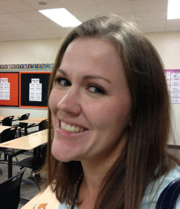
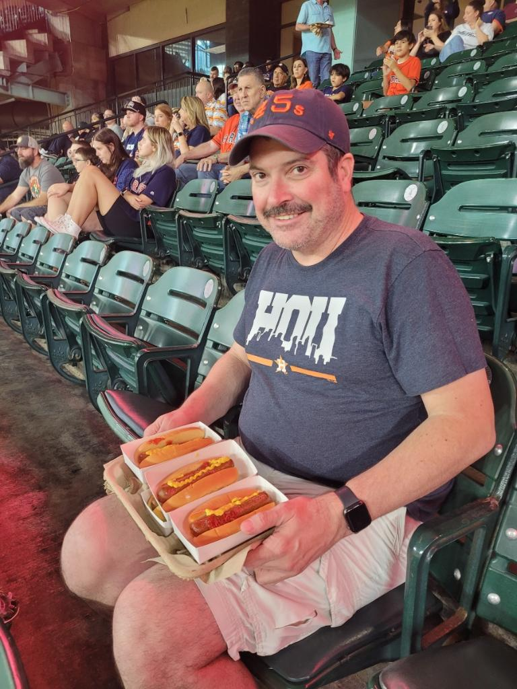
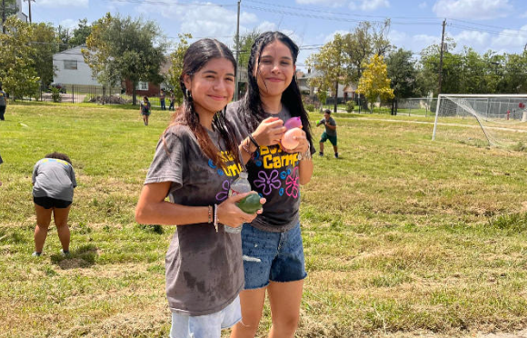
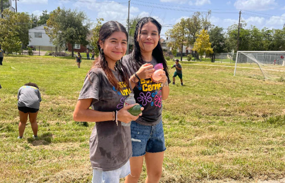

Teachers
Baumgart, Laura
Classes: AP World History, World History, AP European History, and History in Film.
Fun Facts: "1. I studied in Ireland in college. 2. My favorite book is Charlie and the Chocolate Factory. 3. I can tap dance."
Email: lbaumgar@houstonisd.org
Martin, Justin
Martinez, Rhett
Classes: AP English Literature, AP English Language, Theatre Arts
Fun Facts: "1. I have a theatre production company. 2. I rescue dogs. 3. I travel."
Email: rmarti43@houstonisd.org
Mechlor, Antonio

Classes: Engineering and Robotics
Fun Facts: "1. I am a licensed architect in Texas. 2. I love to travel. 3. I am a huge car guy "gear-head"."
Email: antonio.mechler@houstonisd.org
Michel, Cecilia
Classes: English 2 Pre-AP and Academic, OneGoal Y1 (Juniors), OneGoal Y2 (Seniors)
Fun Facts:"1. I love to propagate plants! 2. I enjoy running and that is why I am the sponsor for the Running Club. 3. My favorite holiday is Halloween. "
Email: cmichel@houstonisd.org
Monceaux, Ryan

Classes: Government/Economics, AP Government/Economics, Debate, and Fundamentals of AI
Fun Facts: "1. I lived in Alaska during my childhood. 2. I have hosted 9 foreign exchange students from around the world. 3. I won a Texas Hold 'em Tournament in Las Vegas."
Email: Ryan.monceaux@houstonisd.org
Oxley, Jacob

Classes: Physics, AP Physics 1, AP Physics 2, and AP Precalculus
Fun Facts: "1. I went to college at Illinois Institute of Technology in Chicago. 2. The Big Bang Theory is my least favorite show. 3. I grew up in Kansas City, Missouri"
Email:jacoboxley@houstonisd.org
Randall, Bryan
Classes: AP US History, US History, AP African American Studies, and AP Psychology
Fun Facts: "1. I am a Houston Astros blogger. 2. I rarely lose at Trivia games. 3. I have seen every episode of MST3K multiple times (there are 211 of them)."
Email: bryan.randall@houstonisd.org
Rodriguez, Francisco
Classes: AP Art levels, Art 3 HADV, Art 2 Photography, and Art 1
Fun Facts: "1. I think I have a good sense of humor. 2. I like to play music. 3. I like gardening (it's fun to me)."
Email: frodrig3@houstonisd.org
Salgado, Ronaldo

Classes: AP Human Geography, PAP World Geography, Mexican American Studies, Financial Literacy, Girls Soccer Coach, Athletic Director
Fun Facts: "1. I met my fiance at Eastwood Academy. 2. I have a 2017 World Series ring from my time working with the Astros. 3. I was the first in my entire family to graduate college."
Email: ronaldo.salgado@houstonisd.org
Sliva, Liana

Classes: English 3, English 4, Dual Credit ENGL 1301-1302, Introduction to Humanities
Fun Facts:"1. I learned German and Italian in college. 2. I collect postcards. 3. One of my favorite books to teach is Mary Shelley's Frankenstein!"
Email: liana.silva@houstonisd.org
White, Molly

Classes: Reading 2, Creative Writing, Yearbook, and Dyslexia Intervention
Fun Facts: "1. I have four animals: a three-legged dog and three cats. 2. I minored in theatre and creative writing in college. 3. I moved to Houston from Iowa seven years ago."
Email: molly.white@houstonisd.org
Cruz-Jefferson, Natasha

Position: Principal
Fun Facts: "1. I speak Spanish, English, and French! 2. I studied abroad in France and got lost traveling to the Eifel Tower on New Year's Eve! 3. I played Trumpet growing up in school and at church."
Email: natasha.cruzjefferson@houstonisd.org
Harwell, Jennifer

Position: Assistant Principal
Fun Facts: "1. I love to travel and try new food (specifically spicy food). 2. I love to read and have over 1000 books in my house. 3. I collect mini figurines from all the places that I visit. "
Email: JHarwell@houstonisd.org
Higgins, Matthew
Position: Administrator
Fun Facts: "1. I am a published writer. 2. All of my 3 brothers are bald. 3. My favorite ice cream is pistachio. "
Email: mhiggins@houstonisd.org
Ramirez, Isamar

 
